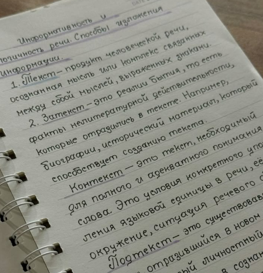
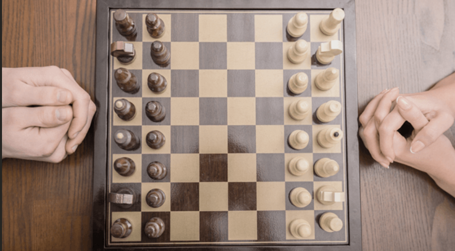
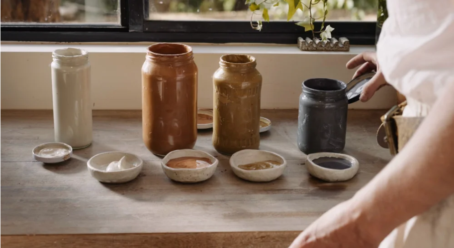
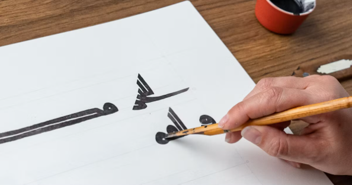
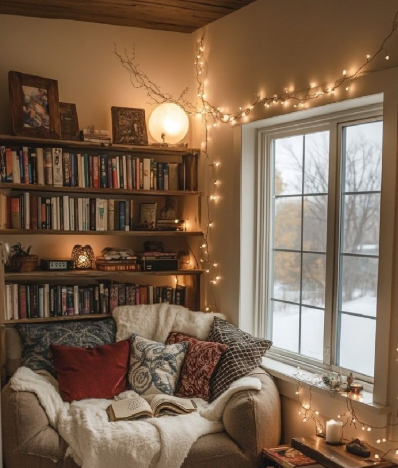

Learning a new language
I already speak four languages fluently, but I would love to challenge myself with either Spanish or Russian. Learning languages opens the door to new cultures and perspectives.
Explore resourcesLooking ahead
Dreams, curiosities and things on my wishlist
These are hobbies I hope to explore more seriously in the future. They might change over time, but for now, they feel meaningful to me. Between 3 and 5 seemed like a good number to keep this list honest — these are things I genuinely want to try, not just a bucket list I'll forget about.
A little look back at how I got here — each hobby has its own story.
Childhood
My father introduced me to books early. Les Misérables during Covid sealed the deal.
5 years ago
After the guitar didn't work out, I gave piano a try and never looked back.
3 years ago
A friend's pink cardigan inspired me to pick up a hook. First week was a disaster. Then — it clicked.
Now
All the hobbies below are on my radar — who knows which one will stick first.

I already speak four languages fluently, but I would love to challenge myself with either Spanish or Russian. Learning languages opens the door to new cultures and perspectives.
Explore resources
I have always wanted to learn chess. It seems like a fun way to challenge my mind, think ahead, and see how creative I can get with strategy.
Learn to play
I love handmade items, and the idea of shaping clay into something I can actually use fascinates me. A friend of mine does this and her creations are amazing.
How to start
I once tried Chinese calligraphy, but it didn't turn out well. Now I want to try Arabic — a language I'm familiar with, and whose letters I find beautifully shaped.
Beginner's guide
One day, I would love to design a cosy reading corner with shelves full of books and a comfortable chair where I can spend hours lost in a story.
A small, honest list of things I want to do — some ticked, most still waiting.